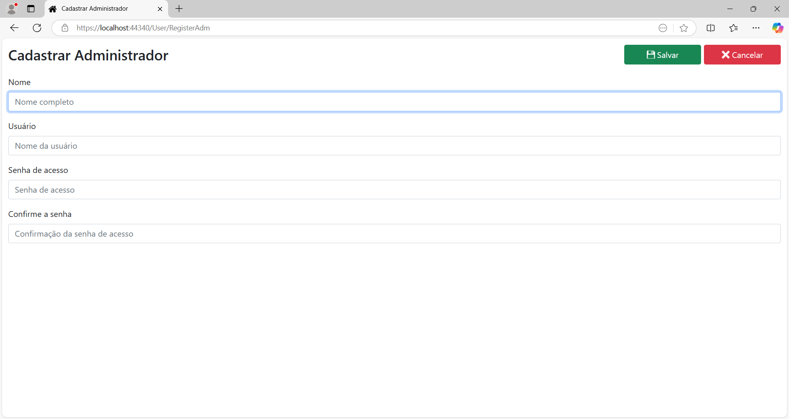

Cadastrar Administrador
Ainda não há uma conta de administrador cadastrada no servidor. Ela é necessária para acessar o sistema pela primeira vez.
Para cadastrar o usuário administrador, clique no botão Cadastrar Admin.. Vai abrir a seguinte página:

Preencha os campos:
Nome: Nome completo do usuário administrador.
Usuário: Nome de usuário do administrador.
Senha de acesso: Senha de acesso do administrador.
Confirme a senha: Confirmação da senha de acesso.
Após preenchidos todos os campos, clique no botão Salvar.
Finalizado o cadastro, faça o login no sistema para cadastrar os demais usuários.
Cuidado!
Há somente um usuário com privilégio de administrador, e ele é o único que pode criar contas de usuários convidados, retirar-lhes o acesso ou alterá-las, logo, é importante que os dados deste usuário sejam preservados com bastante cuidado.